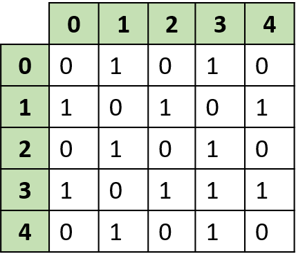
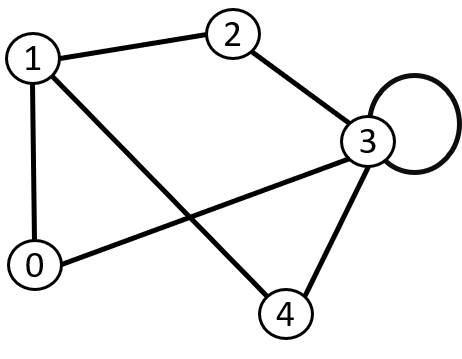

Способы объявления
Виды графов
Матрица смежности


Таблица, где как столбцы, так и строки соответствуют вершинам графа. В каждой ячейке этой матрицы записывается число, определяющее наличие связи от вершины-строки к вершине-столбцу (либо наоборот).
Это наиболее удобный способ представления взвешенных графов. Недостатком являются требования к памяти, прямо пропорциональные квадрату количества вершин.
Объявление графа в C++
1 cin >> n; //вводим количество вершин
2 vector <vector <int> >a(n,vector <int> (n)); //создаем двумерный вектор (можно вместо вектора создать двумерный массив(int a[n][n])
3 for ( int i = 0;i < n;i++){
4 for ( int j = 0;j < n;j++){
5 cin >> a[i][j]; //ввод матрицы
6 }
7 }
Список смежности

Список, где каждой вершине графа соответствует строка, в которой хранится список смежных вершин. Такая структура данных не является таблицей в обычном понимании, а представляет собой «список списков».
Это наиболее удобный способ для представления разреженных графов, а также при реализации базовых алгоритмов обхода графа в ширину или глубину, где нужно быстро получать «соседей» текущей просматриваемой вершины.
Объявление графа в C++
1 cin >> n; //вводим количество вершин
2 vector <vector <int> >g(n,vector <int> (n)); //создаем двумерный вектор
3 for ( int i = 0;i < n;i++){
4 do{
5 int t;
6 cin >> t; // вводим вершину смежную с данной
7 g [i].push_back(t); //добавляем введенную вершину в строку вектора
8 }
9 while(getchar()!='\n'); //вводим до тех пор, пока не введем пробел
10 }
Список рёбер

Список, где каждому ребру графа соответствует строка, в которой хранятся две вершины, инцидентные ребру.
Это наиболее компактный способ представления графов, поэтому часто применяется для внешнего хранения или обмена данными.
Объявление графа в C++
1 cin >>versh >>rebr ; //Вводим количество вершин и ребер соответсвенно
2 for (int i=0;i<rebr;i++){
3 cin >>le>>r;//вводим левую и правую вершину, соединенных ребром
4 }
Переход из одного способа объявления в другой
Из матрицы в список ребер
1 int n,q=0;
2 cin >> n;
3 vector <vector <int> >a(n,vector <int> (n));
4 for ( int i = 0;i < n;i++){
5 for ( int j = 0;j < n;j++){
6 cin >> a[i][j];
7 }
8 }
9 for (int i=0;i<n;i++){
10 for (int j=q;j<n;j++){
11 if (g[i][j]==1){
12 cout << i+1<<" "<<j+1;
13 cout <<endl;
14 }
15 }
16 q++;
17 }
18 }
Из матрицы в список смежности
1 for (int i =0;i <n;i++){
2 for (int j=0;j<n;j++){
3 if (g[i][j]==1)
4 {
5 m[i].push_back(j);
6 }
7 }
8 }
9 for (int i=0;i<m.size();i++){
10 if (m[i].empty())
11 {
12 m[i].push_back(-1);
13 }
Из списка смежности в матрицу
1 for (int i=0;i<n;i++){
2 do{
3 int t;
4 cin >> t;
5 g[i].push_back(t);
6 }
7 while(getchar()!='\n');
8 }
9 for (int i = 0;i<n;i++){
10 for (int j = 0;j <g[i].size();j++){
11 if (g[i][j]!=0){
12 int r = i;
13 int l = g[i][j] - 1;
14 m[r][l]=1;
15 }
16 }
17 }
Из списка ребер в матрицу
1 int versh,rebr,le,r;
2 cin >> versh>>rebr;
3 vector <vector<int> > g(versh,vector <int> (versh,0));
4 for (int i=0;i<rebr;i++){
5 cin >>le>>r;
6 g[le-1][r-1]=1;
7 g[r-1][le-1]=1;
8 }
Из списка ребер в список смежности
1 cin >> versh>>reber;
2 vector <vector<int> > g(n);
3 for(int i=0;i<reber;i++){
4 cin >> le>>r;
5 g[le-1].push_back(vr-1);
6 g[r-1].push_back(le-1);
7 }
8 for(int i=0;i<versh;i++){
9 if(g[i].empty()){
10 g[i].push_back(-1);
11 }
12 }
Некоторые алгоритмы
Проверка на наличие петлей
По заданной матрице смежности неориентированного графа определите, содержит ли он петли.
Достаточно посмотреть есть ли единичка на главной диагонали, т.е. g[ i ][ i ]==1
int n;
cin >> n;
vector <vector<int> > g(n,vector <int> (n));
...
for (int i=0;i<n;i++){
if(g[i][i]==1){
cout << "YES";
return 0;
}
}
cout<<"NO";
Проверка на неореинтированность
По заданной квадратной матрице n×n из нулей и единиц определите, может ли данная матрица быть матрицей смежности простого неориентированного графа.
Заметим, что в неореинтированном графе единички находится симметрично относительно диагонали. Поэтому надо проверить g[ i ][ j ]==g[ j ][ i ]. Т.к. граф должен быть простым, то надо проверить на петли.
int n;
cin >> n;
...
for (int i=0;i<n;i++){
for (int j=0;j<n;j++){
if (g[i][j]!=g[j][i] || i==j && g[i][j]==1){
cout<<"NO";
return 0;
}
}
}
cout << "YES";
Подсчет количества ребер неореинтированного графа
Простой неориентированный граф задан матрицей смежности. Найдите количество ребер в графе.
Для этого достаточно посчитать в матрице количество единичек, которые обозначает соединение между вершинами, соответсвенно ребро. Затем делим на 2, т.к. в неореинтированном графе ребро ab тоже самое, что и ba.
Если хотим посчитать количество ребер в ореинтированном графе, достаточно просто посчитать количество единичек в матрице смежности.
int n,r=0;
...
for (int i=0;i<n;i++){
for (int j=0;j<n;j++){
if (a[i][j]==1){
r++;
}
}
}
cout <<r/2;
Степени вершин
Неориентированный граф задан матрицей смежности. Найдите степени всех вершин графа.
Вводим вектор размера количества вершин и заполняем все ячейки 1. Если на i-ой строке мы встретили единичку, то ans[ i ] увеличиваем на 1.
Это алгоритм для матрицы смежности.
vector<int>ans(n,0);
...
for (int i=0;i<n;i++){
for (int j=0;j<n;j++){
if (g[i][j]==1){
ans[i]++;
}
}
}
for(int i=0;i<n;i++){
cout<<ans[i]<<endl;
}
Вот алгоритм для списка ребер. Просто теперь при вводе вершин, соединяющий ребро, увеличиваем значение ячейке на соответсвующих верщинах.
cin >> versh>>rebra;
vector<int>ans(versh,0);
for (int i=0;i<rebra;i++){
cin >> le >> r;
ans[le-1]++;
ans[r-1]++;
}
for(int i=0;i<versh;i++){
cout<<ans[i]<<endl;
}